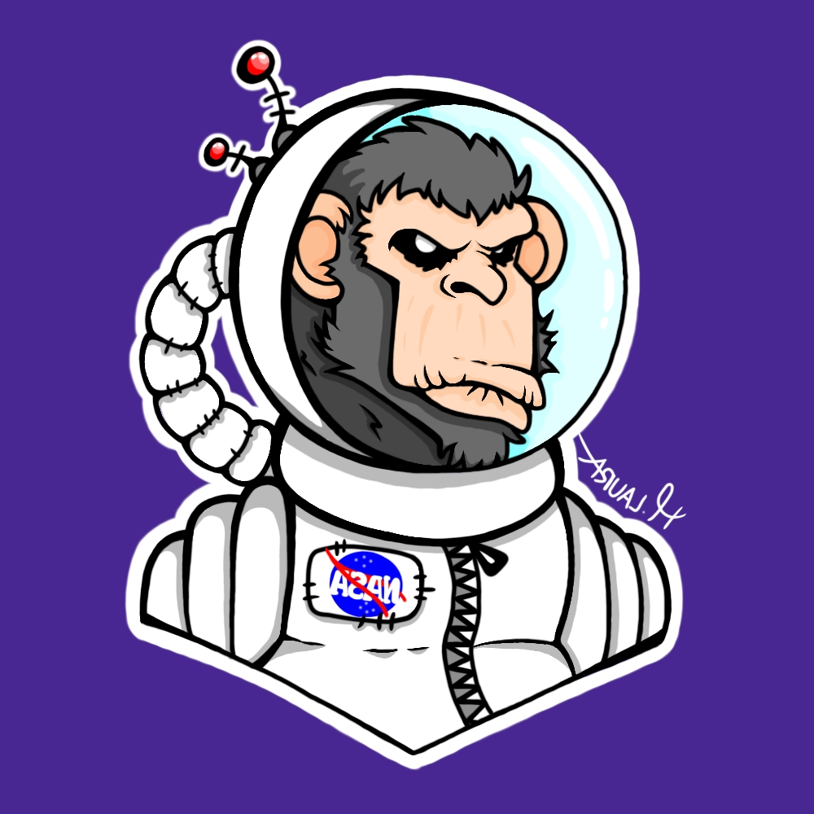

Albert
Rings like in a jewellery shop, too bad these rings are too big for my fingers.

Spaghetti Monster
They fit around the planet but thanks to me they aren't with it.
Saturn was different from the others with it's rings being all around the place.
Albert took a deep breath and got to work on restoring the planet. Meanwhile the spaghetti monster was watching Albert and his actions.
Saturn is the 6th sight to see, it’s a similar giant as Jupiter with it's beautiful rings. The second biggest of all, it’s in the same category of giant planets as Jupiter, Uranus and Neptune.
The only planet that is less dense than water itself.